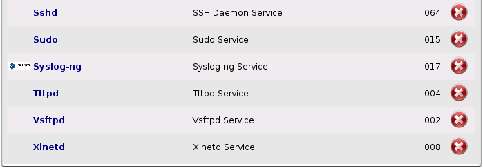
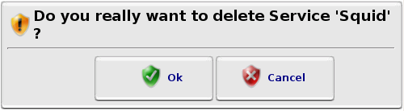
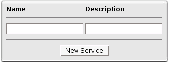
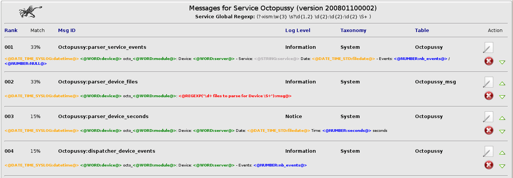
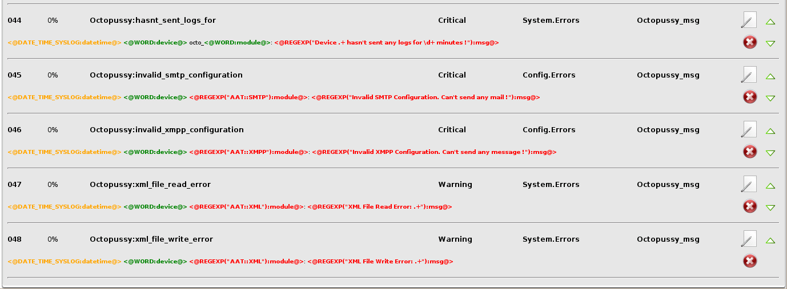
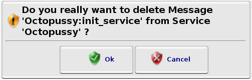

Services
Services
Here you can configure your Services.
A Service is a collection of Messages grouped by "functionality".
Most of time, you've got 1 Octopussy Service for 1 "real" Service.
In some cases, it's useful to have more than one Octopussy service for one "real" Service.
For example, it's interesting to have 2 Octopussy Services for one "Firewall" service, one for Traffic messages and one for System messages.
Then, it will be really fast to make search or report on System messages.
...

Services List
Every time you will  remove a Service, a dialog window will ask you to confirm.
remove a Service, a dialog window will ask you to confirm.

Dialog Window Confirmation
On the bottom of this page, you can add a new Service.

New Service Box
 Service Messages
Service Messages
If you click on a Service name, you will see all Messages in that Service.
For each Message, you can:
 Edit Message
Edit Message- Remove Message
- Move
 Up /
Up /  Down Message in Service
Down Message in Service

...

Service Messages List
Every time you will remove a Message from Service, a dialog window will ask you to confirm.

Dialog Window Confirmation